Kartenkunde
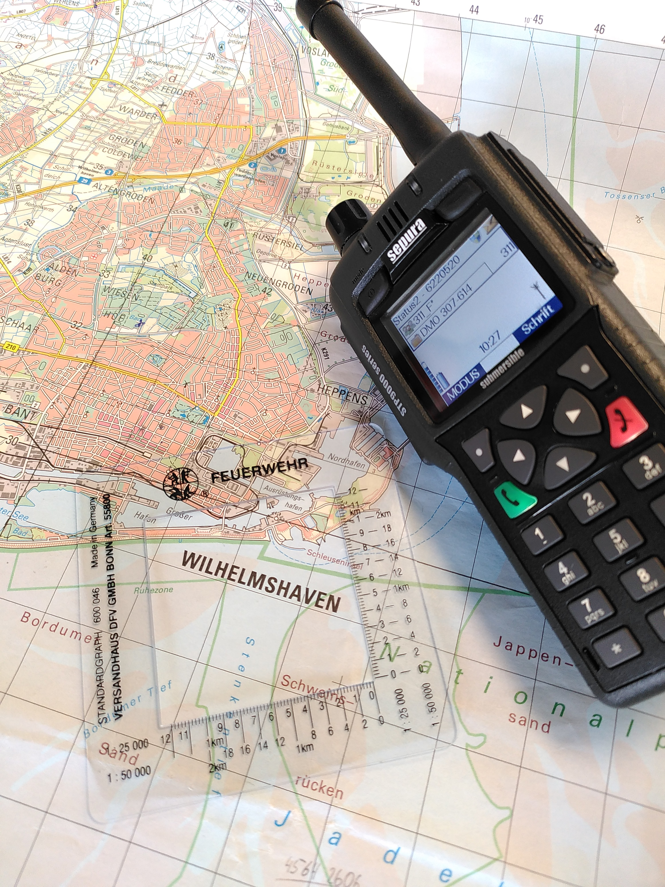

Kartenmaßstäbe verstehen, UTMREF-Koordinaten lesen und mit dem Planzeiger bestimmen.
Wer hat eine Idee?
Ein anschauliches Modell für das Übertragen in die Ebene.
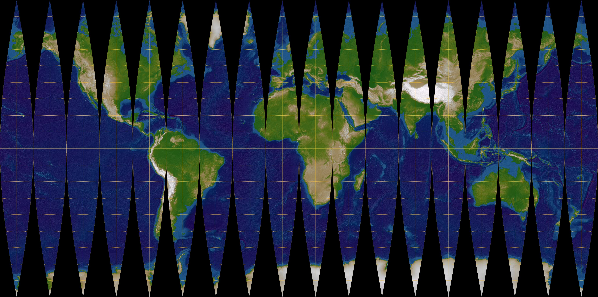
Flächen, Formen oder Entfernungen verändern sich bei der Abbildung.
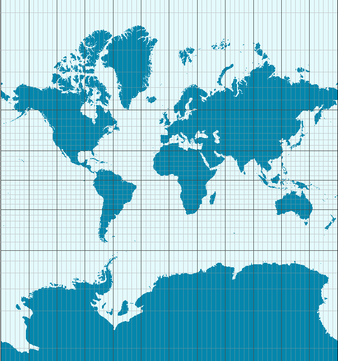
Welche Arten von Karten kennt ihr?
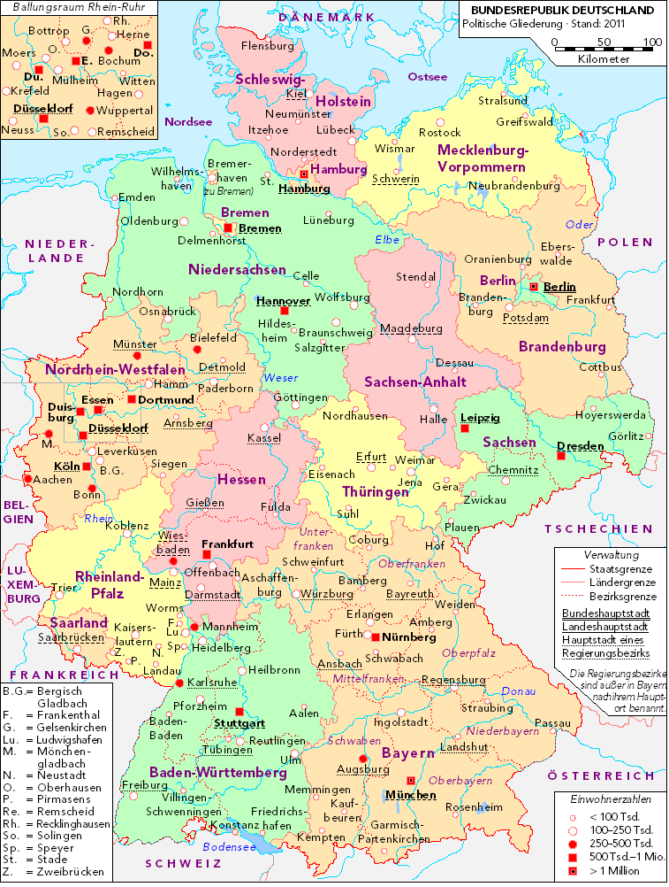
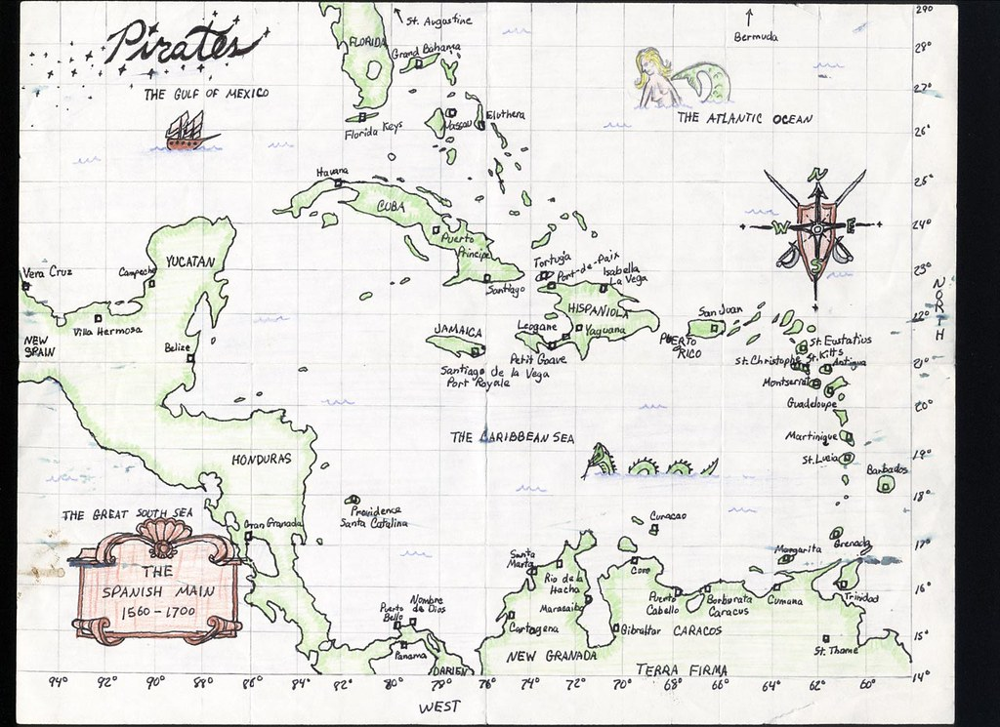
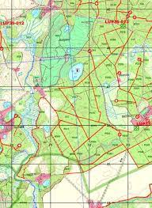
1 cm auf der Karte = 500 m in der Natur
| Auf der Karte | In der Natur |
|---|---|
| 1 cm | 500 m |
| 2 cm | 1 km |
| 4 cm | 2 km |
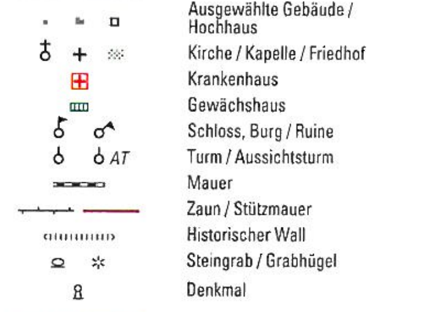
Kartenstand, Legende und Koordinatengitter prüfen.
| Format | Aufbau | Beispiel |
|---|---|---|
| UTM | Zone, Halbkugel, Ost- und Nordwert in Metern | 32N · 441305 · 5930599 |
| UTMREF / MGRS | Zonenfeld, 100-km-Quadrat, Ost- und Nordanteil | 32U ME 4130 3059 |
Koordinatenformat vereinbaren und eindeutig benennen.
60 Zonen mit jeweils 6° Breite.
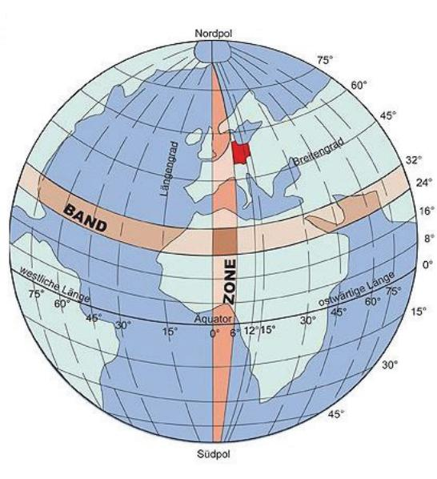
32U benennt das Zonenfeld · ME das 100-km-Quadrat.
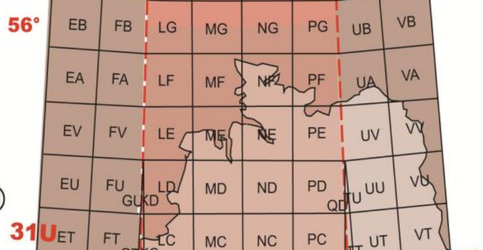
| Bestandteil | Bedeutung |
|---|---|
| 32U | Zonenfeld |
| ME | 100-km-Quadrat, zwei Buchstaben |
| 4130 | Ostanteil innerhalb des Quadrats |
| 3059 | Nordanteil innerhalb des Quadrats |
Erst nach rechts, dann nach oben.
| Ziffern je Zahlenblock | Beispiel im Quadrat ME | Rasterauflösung |
|---|---|---|
| Zwei | 41 30 | 1 km |
| Drei | 413 305 | 100 m |
| Vier | 4130 3059 | 10 m |
Vollständig: 32U ME 4130 3059
Ostwert 39, dann Nordwert 36 ablesen.
32U ME 39 36
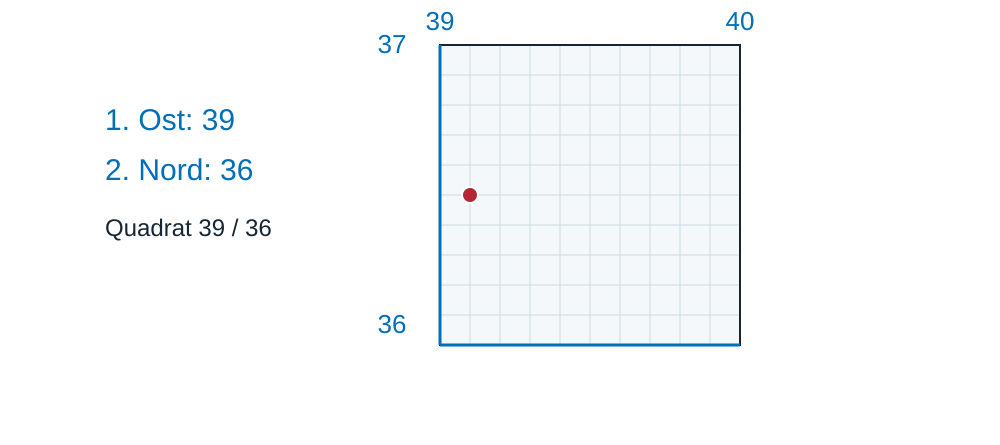
Die waagerechte Skala an die untere Gitternetzlinie legen.
32U ME 39 36
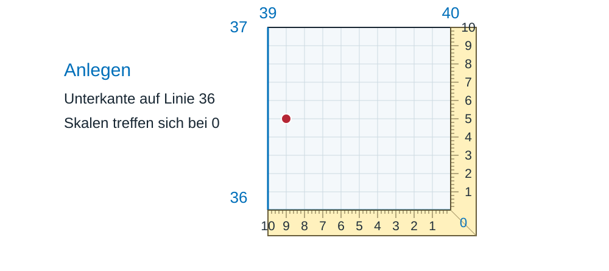
Waagerecht verschieben, bis die senkrechte Skala am Punkt liegt.
32U ME 39 36
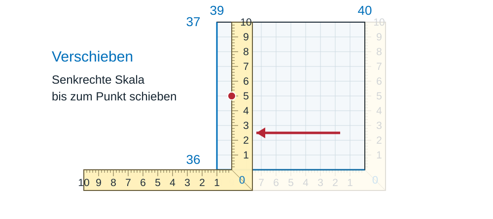
Ost: 39 + 0,1 km · Nord: 36 + 0,5 km
32U ME 391 365
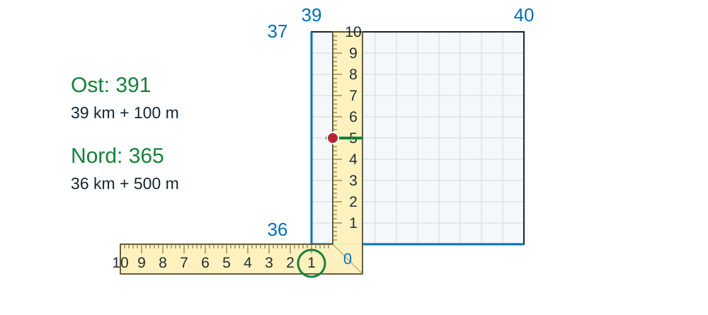